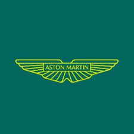

Aston Martin Aramco Formula One Team
Aston Martin je luxusní britský tým se zeleným zbarvením. Jejich ambice jsou vysoké a investují hodně do vývoje.
Strategie
Aston Martin má někdy kreativní strategie, ale ne vždy se jim vyplatí. Jejich pit stop operace se zlepšují.
Jezdci
| Fernando Alonso |
Lance Stroll |
Monopost

Aston Martin AMR24 má elegantní zelené zbarvení typické pro britskou značku
Technické parametry:
| Displacement |
RPM |
Weight |
Estimated |
Estimated |
| 1,6L |
15,000 |
800kg |
640hp |
220ftp torque |